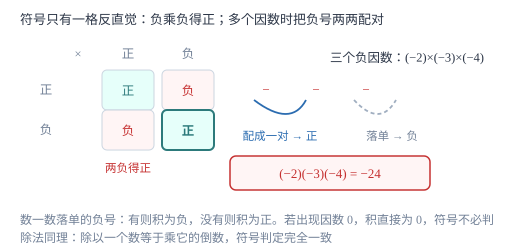

有理数的乘法与除法
乘法只判两件事：符号由负因数个数决定（奇负偶正），数值由绝对值相乘决定；除法不必另立规则，转成乘倒数即可。
| 所属主题 | 有理数 |
|---|---|
| 所属模块 | 代数 |
| 课标学段 | 第四学段（7~9 年级） |
| 前置知识 | 有理数的加法与减法、数轴、相反数与绝对值 |
| 核心素养 | 运算能力抽象能力 |
教材定位
人民教育出版社《人教版（2024版）义务教育教科书·数学》
七年级上册第2章 有理数的运算2.2 有理数的乘法与除法
对应七上 2.2 有理数的乘法与除法。教材给出法则与倒数；本篇把「负负得正」用分配律证出来，并把多个因数相乘的符号判定统一为「数负号个数」。
说明
两数相乘，同号得正、异号得负，并把绝对值相乘；任何数与 0 相乘都得 0。多个不为 0 的数相乘时，先把所有因数的绝对值相乘，再单独确定符号：负因数有奇数个，积为负；有偶数个，积为正。只要有一个因数是 0，积就是 0，符号判定可以跳过。
乘积为 1 的两个数互为倒数。a 的倒数是 1/a（a≠ 0），0 没有倒数，因为不存在一个数与 0 相乘得 1。倒数等于本身的数只有 1 与 -1。有了倒数，除法就能并入乘法：除以一个不等于 0 的数，等于乘这个数的倒数，a÷ b=a\cdot1/b（b≠ 0）；也可以直接用「同号得正、异号得负，绝对值相除」。0 除以任何不等于 0 的数都得 0，而除数不能为 0。乘法满足交换律、结合律与分配律 a(b+c)=ab+ac，这三条是简算的主要依据。
使用场景
乘法最常见的场景是「单价 × 数量」的推广：每件亏 8 元卖出 25 件，亏损额就是 (-8)× 25；退货 6 件相当于卖出 -6 件，用 (-8)×(-6) 反而得到正的贡献。符号在这里不代表「好坏」，只代表方向：亏是负、退是反方向。
除法出现在「平均」与「还原」两类问题里：把总盈亏平摊到若干天、把总里程平摊到若干段、已知总量与份数求每份。倒数还用于把「除以分数」变成「乘倒数」，这一步是后续分式运算的雏形。
注意点
0 没有倒数，也不能作除数。这两个说法是一件事的两面：若 0 有倒数 x，则 0\cdot x=1，而 0 乘任何数都是 0，矛盾。做题时看到分母或除数是 0，直接判定式子无意义。
倒数与相反数是两套完全不同的操作，别混：-2 的相反数是 2（和为 0），倒数是 -1/2（积为 1）。看到「倒数」想乘法，看到「相反数」想加法。
除法没有分配律。a÷(b+c) 不能写成 a÷ b+a÷ c，例如 12÷(2+4)=2，而 12÷ 2+12÷ 4=9。若要用分配律，先把除法转成乘倒数：12÷(2+4)=12×1/6，此时分子可以分配，分母不行。
证明

图 1：符号表只有右下角那格反直觉——负乘负得正；多个因数时把负号两两配对，剩下单个负号则积为负
证明
结论 1负数乘负数得正数，即 (-1)×(-1)=1。
由 1+(-1)=0，两边同乘 -1 得 (-1)×\big(1+(-1)\big)=(-1)× 0=0。左边用分配律展开：(-1)× 1+(-1)×(-1)=-1+(-1)×(-1)。于是 -1+(-1)×(-1)=0，两边同加 1，得 (-1)×(-1)=1。
关键一步依据是分配律与「相反数之和为 0」：把 1+(-1)=0 这条已知等式两边同乘 -1，展开后就能反推出负负得正，不必靠规定。
结论 2多个因数相乘，积的符号由负因数个数的奇偶决定：奇数个为负，偶数个为正。
每两个负因数相乘得正，可以把负号两两配对消掉。若负因数有 2k 个，配成 k 对，全部化正，剩下正因数，积为正；若有 2k+1 个，配对后还剩一个负号，积为负。正因数不影响符号，0 因数使积直接为 0。
关键一步依据是「负负得正」可重复使用：符号判定可以拆成若干次两两相乘，配对完成后只剩「有没有落单的负号」这一个问题。
结论 3除以一个不为 0 的数等于乘它的倒数，即 a÷ b=a\cdot1/b。
除法是乘法的逆运算。设 a÷ b=c，则 c\cdot b=a。验证 a\cdot1/b 也满足这一条：\Big(a\cdot1/b\Big)\cdot b=a\cdot\Big(1/b\cdot b\Big)=a\cdot 1=a，用的是乘法结合律与倒数定义 1/b\cdot b=1（b≠ 0）。两个式子乘以 b 都得 a，所以它们相等。
关键一步依据是「除法是乘法的逆运算」加上「互为倒数的两数积为 1」：只要新写法满足除法的定义，两个表达式就是同一个数。
动手实验
用记账模拟负负得正。设每笔欠款 3 元，记 -3。欠 4 笔，账上变化是 (-3)× 4=-12 元。若这 4 笔欠款被全部免除，相当于「反向的 4 笔」，记 (-3)×(-4)，账上实际增加了 12 元，正好是 +12。再试免除 3 笔：(-3)×(-3)=+9。动手记两列账，符号规则就落到具体的钱上了。
解题思路
做乘法按四步：第一步扫一遍有没有因数 0，有就直接写 0；第二步数负因数个数，奇数个定负、偶数个定正；第三步把各因数的绝对值相乘；第四步符号与数值合并写结果。因数超过三个时，先把符号单独判完再算数值，不要边算边犹豫符号。
做除法两条路，选更省事的一条。路一是化除为乘：把除号改乘号、除数改成它的倒数，之后完全按乘法四步走；路二是直接算：同号得正、异号得负，绝对值相除。除数是分数时常走路一，因为乘倒数后能约分；除数是整数时常走路二。遇到形如 a÷ b\cdot c 的式子，从左到右依次算，不能先算 b\cdot c。
按场景的例题
例 1（场景：销售与利润） 亏损商品的销售与退货
某商品每件亏损 8 元（单件利润记为 -8 元）。一天通过门店售出 25 件，另一个渠道退回 6 件（相当于该渠道售出 -6 件）。求这一天两个渠道合计的利润。
解：门店部分：(-8)× 25，异号得负，8× 25=200，得 -200 元。渠道部分：(-8)×(-6)，同号得正，8× 6=48，得 +48 元——退货把亏掉的钱退回来，所以是正向贡献。合计 -200+48=-152 元。这里符号表示的是方向：售出使亏损扩大，退回使亏损缩小，两者方向相反，因此一个为负一个为正。
答：合计利润 -152 元，即净亏损 152 元。
例 2（场景：竞技与游戏） 知识竞赛的计分规则
某知识竞赛规定：答对一题得 5 分，答错一题扣 3 分，不答得 0 分。甲队答对 18 题，答错 7 题，未答 5 题。求甲队总分。
解：三类分别算再相加。答对：5× 18=90 分。答错：扣分记为负，每错一题 -3 分，(-3)× 7=-21 分。未答：0× 5=0 分。合计 90+(-21)+0=69 分。若两队比较，扣分越多总分越低，这与「负数是反向的量」一致：答错不是「少得 3 分」，而是「倒扣 3 分」。
答：甲队总分 69 分。
例 3（场景：金融与增长） 基金的日均收益与交易日数
某基金在 6 个交易日内累计收益为 -144 元。(1) 若每个交易日收益相同，求日均收益；(2) 若日均收益为 -24 元，问累计 -144 元需要几个交易日？用乘法验算你的答案。
解：(1) 求日均即把总量平均分成 6 份：-144÷ 6，异号得负，144÷ 6=24，得 -24 元。也可写成 -144×1/6=-24，两条路一致。(2) 求份数用除法：-144÷(-24)，同号得正，144÷ 24=6，得 6 个交易日。验算：(-24)× 6=-144，与题给累计收益相符。两道小题互为逆运算，正好说明乘除的互逆关系。
答：(1) 日均收益 -24 元；(2) 需要 6 个交易日，验算 (-24)× 6=-144 成立。
常用推论
若 ab=0，则 a=0 或 b=0。这条结论是后面解一元二次方程的基石：几个因式相乘等于 0，至少有一个因式为 0。
互为倒数的两数积为 1，互为相反数的两数和为 0。两组概念的操作不同，但都是「与某个数配对后得到单位元」的思路。
除以 -1 等于取相反数：a÷(-1)=-a。所以「改变符号」既可以理解为乘 -1，也可以理解为除以 -1。
乘法对加法满足分配律，可以正向展开也可以逆向提取公因式；除法对加法不满足分配律，必须先转成乘倒数再处理。
易错点
错认为 0 的倒数是 0。
为什么错把「0 乘任何数得 0」这条乘法性质，误当成「0 与 0 相乘得 1」。
正确0 没有倒数。倒数的定义是两数之积为 1，而不存在任何数与 0 相乘得 1，所以 0 的倒数不存在。
错认为 -2 的倒数是 2。
为什么错把倒数与相反数混为一谈，-2 与 2 的和确实为 0，那是相反数。
正确-2 的倒数是 -1/2，因为 (-2)×\Big(-1/2\Big)=1。检验倒数一律用乘法验算，检验相反数用加法。
错计算 (-2)×(-3)×(-4) 得 24。
为什么错只注意到「负负得正」，数了两个负号就判正，漏数了第三个。
正确负因数共 3 个，奇数个，积为负；绝对值 2× 3× 4=24，所以结果是 -24。判定符号时把负号一个个点出来数。
直观理解
把正负号想成「方向开关」：乘一个正数不改变方向，乘一个负数就翻转一次方向。翻转偶数次回到原方向，翻转奇数次朝向反面——这就是「奇负偶正」。除法也一样，因为除以 b 就是乘 1/b，方向由 1/b 的符号决定，规则自然一致。